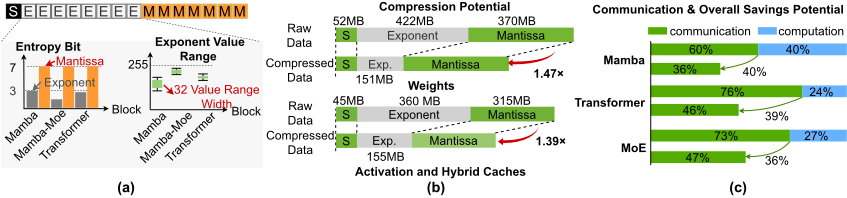
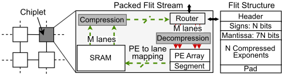
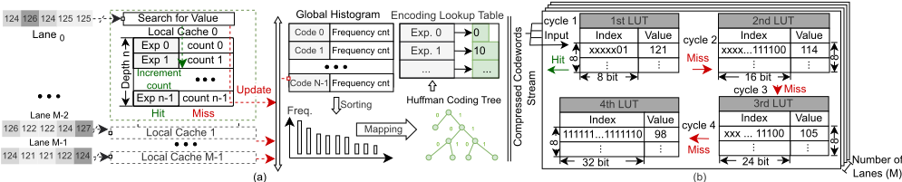
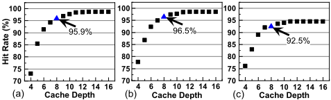
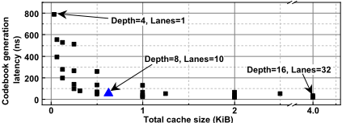
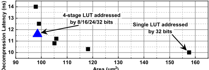
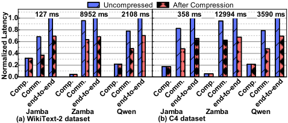

LEXI：面向 Hybrid LLM 中 chiplet 间高效通信的无损指数编码
该论文针对 LLM 推理中数据搬运成为首要瓶颈、尤其多 die/chiplet 架构中 decode 阶段跨 die 通信开销大的问题，提出 LEXI 无损压缩方案。作者 profiling 发现 BF16 指数流 Shannon 熵不足 3 bit，据此设计基于 Huffman 编码的指数压缩：权重离线压缩存于 DRAM/HBM 并在计算侧就近解压，激活与 KV cache/SSM state cache 在 NoC 路由器 egress/ingress 端口实时压缩，采用多 lane 并行直方图逐层生成码本、多级 LUT 快速解码，并以 flit 对齐打包维持线速吞吐。设计以 SystemVerilog 实现并在 GF 22 nm 下以 1 GHz 综合，面积开销仅 0.09%。在基于 Simba 的 6×6 同构 chiplet 阵列上，Jamba/Zamba/Qwen 模型的 chiplet 间通信延迟降低 33-45%，端到端推理延迟降低 30-35%，且精度无损。
LLM 推理延迟日益被数据搬运主导：模型参数规模与随序列长度增长的 KV cache 造成'内存墙'，在多 die/chiplet 加速器中 decode 阶段的跨 die 通信成为一阶瓶颈。量化与剪枝等有损手段牺牲模型精度，已有无损压缩工作只针对权重（如从 HBM 加载参数）而未解决跨 die 通信开销，软件压缩方案也无法解决 chiplet 加速器的数据流与互连瓶颈。论文目标是在不改变数值精度、不牺牲链路吞吐与模型精度的前提下，降低 chiplet 间及内存通信的数据量与延迟。
LEXI 只对 BF16 的 8-bit 指数域做 Huffman 无损编码，mantissa 与 sign 原样传输，不改变数值语义。压缩/解压单元位于片上网络路由器的 egress/ingress 端口：权重离线压缩后存于 DRAM/HBM，接收侧即时解压；激活与 hybrid caches（Transformer KV cache 与 Mamba state cache）在发送侧在线压缩。硬件上，编码器用 M 条并行 lane（各带 8 项本地 cache）并行统计指数直方图，逐层生成 Huffman 码本（每层一次性 78 周期启动开销），32 项编码 LUT 复制到各 lane 实现单周期查表，输出按 {Header, Sign bits, Mantissa, Compressed Exponents} 的 flit 格式对齐打包，维持每周期一个 flit 的线速；解码器采用 8/16/24/32-bit 前缀索引的四级 LUT 加 10 条并行解码 lane 轮询分发，平均解码延迟 11.6 ns；对超出 32 项编码范围的指数设 24-bit escape code 加原始 8-bit 指数的 fallback 保证功能正确。
BF16 指数流 Shannon 熵平均低于 3 bit、取值集中在 32 个以内；权重指数体积从 422 MB 降至 151 MB、激活/hybrid cache 从 360 MB 降至 155 MB，整体数据量分别缩减 1.47× 与 1.39×
压缩比 CR≈3.1×，优于 BDI 压缩的 2.40×；RLE 仅 0.64×（反而数据膨胀）
chiplet 间通信延迟降低 33-45%：WikiText-2 上 Jamba 降 45.4%（86.70ms→47.35ms）、Zamba 降 33.5%、Qwen 降 38.3%；C4 上分别降 42.0%、34.0%、39.2%
端到端推理延迟降低 30-35%：WikiText-2 上 Jamba/Zamba/Qwen 分别降 31%/32%/30%，C4 上分别降 35%/32%/31%
GF 22 nm、1 GHz 综合下压缩/解压单元总面积 14,995.2 µm²、总功耗 45.43 mW，折算到 16 nm Simba 对比后仅占 6 mm² chiplet 面积的 0.09%
四级 LUT 解码器平均解码延迟 11.6 ns（98.5 µm²/条），10 条并行解码 lane 可饱和 100 Gbps 链路；每层一次性码本生成开销 78 周期（1 GHz 下 78 ns），之后约 1.9M 激活零开销复用该码本
Mamba/Transformer/MoE 模块的通信开销分别降低 40%/39%/36%；未压缩情形下通信占端到端延迟的 68-95%
相对已有工作的区别：(1) 论文自称首次证明仅针对指数域的无损编码能以全速（每周期一个指数）硬件实现且面积/能耗开销可忽略；(2) 已有无损压缩只做权重压缩（面向 HBM 参数加载），LEXI 同时覆盖权重、激活与 hybrid caches，并直接以跨 die 通信为优化目标；(3) 与量化/剪枝等有损方法正交，可在任何量化/剪枝之后叠加使用而不影响模型精度；(4) 针对实时性挑战将变长编码改造为 flit 对齐、线速流水化的硬件管线，避免传统熵编码器的大字典/深 FIFO/长关键路径问题。
相关度级别：high
命中能力域：2.1 IP 架构与微架构 | 2.2 RTL 设计与实现
理由：论文核心是在 chiplet 互连链路的 ingress/egress 端口嵌入线速无损压缩 codec，属于互连 IP 的微架构创新（2.1）：面向 PPA 对 lane 数、cache 深度、解码器级数做了系统化设计空间探索，与团队在 UCIe/高速互连 IP 上做带宽/延迟/面积权衡以及 chiplet/多 die 集成架构的工程场景直接对应。同时论文给出完整的 SystemVerilog 可综合 RTL 实现、Design Compiler 综合至 GF 22 nm 1 GHz 的面积/功耗分解，属于 2.2 的典型流程；其 flit 对齐成帧、线速流水线、多级 LUT 解码、escape 异常处理等设计手法可直接借鉴到团队互连/内存 IP 的 RTL 设计中。
建议动作：深入精读并做内部分享
arXiv:2603.15589v1 [cs.AR] 16 Mar 2026
Miao Sun、Alish Kanani、Kaushik Shroff 和 Umit Ogras
{smiao23,ahkanani,kshroff,uogras}@wisc.edu
威斯康星大学麦迪逊分校电气与计算机工程系
数据搬运开销会增加最先进大语言模型（LLM）的推理延迟。这些模型通常使用 bfloat16（BF16）格式以保证训练的稳定性。浮点标准为指数部分分配了八个比特，但我们的剖析结果显示，指数流的香农熵低于 3 比特，表明其具有很高的固有可压缩性。为了利用这一潜力，我们提出了 LEXI，一种基于霍夫曼编码（Huffman coding）的新型无损指数压缩方案。LEXI 在数据流动过程中实时压缩激活值和缓存，同时存储压缩后的权重以便在计算单元附近即时解压，且不牺牲系统吞吐量和模型精度。片上网络（Network-on-Chip）路由器入口与出口端口处的编解码器通过多通道查找表（LUT）译码器维持最大链路带宽，在 GF 22 nm 工艺下仅引入 0.09% 的面积和能耗开销。在基于同构芯粒架构实现的现代 Jamba [23]、Zamba [11] 和 Qwen [3] 大语言模型上，LEXI 将芯粒间通信延迟和端到端推理延迟分别降低了 33-45% 和 30-35%。
对基于大语言模型（LLM）的生成式预训练变换器（GPT）类服务日益增长的需求，给计算与存储资源带来了压力。例如，Llama [39]、Falcon [2] 和 Qwen [3] 等模型已扩展至数千亿参数的规模，其计算负载也从每次推理约 100 TeraFLOPS 增长至 1 PetaFLOP。推理延迟日益被数据搬运所主导，这是因为：(i) 模型参数的庞大规模对内存容量和带宽造成压力；(ii) 自注意力机制固有的键值（KV）缓存随序列长度而增长 [8, 21]。这些挑战在多裸片/芯粒加速器中被进一步放大：在解码阶段，跨裸片流量成为一阶瓶颈 [35]。量化和剪枝可以缓解这些问题，但它们以牺牲模型精度为代价来换取效率 [14, 38]。
BF16 格式已成为神经网络训练与推理的主导精度格式，尤其是在 GPU 和云计算环境中。例如，行业标准平台 Hugging Face Model Hub 已将 BF16 声明为大多数广泛使用的大语言模型的默认精度。事实上，其配置
近来，集成 Transformer 与 Mamba 模块的混合模型已成为在内存占用、计算强度、性能与精度之间取得平衡的颇具前景的解决方案 [6, 11, 23]。这些架构通过用固定大小（与序列长度无关）的状态空间层替代部分注意力块，降低了 KV 缓存压力 [13]。尽管有这些改进，裸片间通信开销仍然是一阶瓶颈 [41]。因此，本文针对数据传输开销这一关键问题——因为在数据密集型阶段，大语言模型的执行从根本上受限于内存带宽 [27, 37]。
元数据将 Llama 和 Mistral 系列等知名大语言模型的 torch_dtype 指定为 "bfloat16"。BF16 采用 8 位指数，实现了与 FP32 相同的动态范围，无需 FP16 通常所需的显式损失缩放即可缓解上溢与下溢问题。然而，我们的剖析结果显示，由于权重和运行时激活值的取值范围有限，指数字段在推理期间平均表现出不足 3 位的香农熵。这一现象为在不改变数值精度的情况下降低通信成本提供了机会。
我们基于格罗方德（GlobalFoundries, GF）22 nm 工艺实现了 LEXI，并将其集成到一个具有代表性的同构多芯粒架构 [34] 上。由于 LEXI 仅影响芯粒间通信和存储器芯粒通信，它与芯粒内部的计算是正交的。在我们的实验设置中，我们模拟了三个近期且具有代表性的大语言模型（LLM）：Jambatiny-dev [23]、Zamba2-1.2B-Instruct-v2 [11] 和 Qwen1.5-1.8BChat [3]，在 WikiText-2 [26] 和超大清洁爬取语料库（Colossal Clean Crawled Corpus, C4）[31] 数据集上所产生的通信流量。LEXI 将通信延迟降低了 33-45%，将端到端推理延迟降低了 30-35%，同时始终保持无损运行。我们的 GF 22 nm 实现表明，这些运行时压缩/解压缩单元仅带来 0.09% 的面积开销，凸显了 LEXI 的实用性。
为了挖掘这一潜力，我们提出了 LEXI，一种面向高效芯粒间通信的无损指数编码。如图 1 所示，LEXI 在压缩指数的同时，保持了 BF16 在存储与计算单元中的数值表示。它以紧凑的无损形式传输权重和激活值，从而降低了跨存储层次和芯粒互连的数据搬运延迟。该设计包含两条路径：(i) 对存储在 DRAM/高带宽存储器（HBM）中的权重进行离线压缩；(ii) 对激活值、注意力模块中的 KV 缓存以及 SSM 模块中的状态缓存进行即时压缩，这些统称为混合缓存（hybrid caches）。一种新颖的轻量级多缓存霍夫曼（Huffman）编码器维护指数频率统计信息，生成每层码本，并在运行时压缩指数流，同时将一个小的码本与比特流一起捎带传输。在接收端，基于多级查找表的解压缩提供单周期译码，从而维持流水线吞吐量。
据我们所知，这项工作首次表明，仅针对指数的无损编码可以在全速下实现，且面积和能耗开销可忽略不计。我们的主要贡献如下：

随着大语言模型（LLM）规模的不断增长，推理瓶颈已从计算转移到数据搬运，尤其是在解码阶段 [1, 33]。在该阶段生成单个 token 需要访问全部模型权重以及来自先前上下文的混合缓存，这造成了处理器速度与可用内存带宽之间的差距，通常被称为“内存墙”（memory wall）[10, 28]。这一现象反映了 LLM 工作负载的低计算强度：其浮点运算次数（FLOPs）与传输字节数之比不足以隐藏内存延迟，从而导致计算资源利用不足。
混合 LLM 模型在 Transformer 注意力层的基础上补充了具有固定大小循环状态的 Mamba 状态空间模型（SSM）层，从而缓解了内存需求 [9, 13]。例如，Jamba [23] 和 Zamba [11] 的推理速度分别达到 Mixtral [18] 的 3 倍和 1.6 倍。在边缘计算平台上，eMamba [20] 便是一个例证，其吞吐量分别达到 Transformer 和卷积神经网络（CNN）的 2.22 倍和 9.95 倍。然而，仅靠算法改进不足以将通信开销降至最低，因为混合模型的解码阶段在本质上是自回归的，使得模型在推理期间仍然受内存限制（memory-bound）。将权重和激活一直量化到极端的 2 比特 [25, 42] 以及剪枝 [16]，是降低模型规模、面积和通信开销的常用手段。然而，这些方法会牺牲模型性能。相比之下，LEXI 通过一种硬件实现的无损压缩方案来填补这一空白，该方案仅针对 BF16 数据的指数字段。作为一种正交的方法，LEXI 可以与现有的量化和剪枝技术无缝结合。因此，它可以在任何量化或剪枝技术之后应用，从而在不影响模型性能的前提下进一步降低通信开销。
| Work | Lossless | Compressed Data | Implementation |
|---|---|---|---|
| HACK [45] | ✗ | KV-cache | SW |
| KVComp [19] | ✗ | KV-cache | SW |
| Ecco [7] | ✗ | KV-Cache/Act./Weight | HW |
| Zhang et. al [44] | ✓ | Weight | SW |
| Huff-llm [43] | ✓ | Weight | SW |
| Zipnn [15] | ✓ | Weight | SW |
| LEXI | ✓ | KV-Cache/Act./State/Weight | HW |
| Work | Lossless | Compressed Data | Implementation |
数据压缩在减少片上网络流量方面已被证明卓有成效 [32, 40]。为降低深度学习模型的存储和通信成本，已有多种有损和无损压缩技术被提出。如表 1 所示，先前的工作大多集中于有损压缩 [7, 19, 45]，而这会降低原始模型的性能。此外，现有的无损压缩工作 [15, 43, 44] 仅考虑了权重压缩（例如，用于从高带宽存储器（HBM）加载模型参数），而未涉及跨裸片（cross-die）通信成本。再者，软件（SW）压缩方案并未解决基于芯粒（chiplet）的加速器在数据流和互连方面的瓶颈，而对于这类加速器而言，芯粒间通信仍然是主要约束。因此，研究焦点转向了专用的硬件（HW）解决方案。
与先前工作不同，LEXI 将无损压缩应用于权重、激活值和混合缓存。针对通信延迟，我们提出了一种低成本的硬件实现，同时避免了计算开销。我们的新颖设计仅需一个小的符号字母表和查找表（LUT），面积开销仅为 0.09%，同时可实现全速运行（每周期一个指数）且没有任何性能损失。
我们首先分析权重、激活值和混合缓存中的比特级熵，以分析潜在的节省空间并指导设计过程。这一剖析揭示了推理过程中 BF16 表示所存在的冗余，并凸显了实现实用且硬件高效压缩所面临的关键挑战。
剖析结果表明，利用 BF16 指数中的冗余可以显著降低通信开销。要在推理过程中实现这一潜力，需要解决两个主要挑战。
挑战 1——实时数据压缩：压缩与解压缩必须维持链路速率的吞吐量，并具有短而确定的延迟，使其开销不会超过所节省的传输时间。这要求采用流式操作，具备 (1) flit 对齐的组帧、(2) 快速的动态码本配置，以及 (3) 与入口时序兼容的解码器延迟。这就需要将复杂的变长编码（Variable-Length Coding）转化为周期数可预测的硬件流水线。该压缩方案采用内部依赖极少的专用电路，以确保真正的链路速率吞吐量，从而缓解由可变输出大小带来的调度难题。
挑战 2——硬件开销：压缩与解压缩单元必须只带来极小的面积开销；对于面向 chiplet 的设计，还须避免宽数据通路开销和大容量缓冲区成本。传统熵编码器因需要体积可观的字典/SRAM、深度较大的 FIFO 以及较长的关键路径 [22, 24] 而不切实际，这些因素会推高面积与动态功耗。面向 chiplet 的设计必须避免宽数据通路开销，并在不付出大容量缓冲区成本的前提下达到频率目标。这要求采用针对 BF16 指数内容优化的、状态极少的上下文感知编码，并倾向于使用极小尺寸的字典。要实现高时钟频率，需依靠浅层且高度流水化的逻辑来保持较短的关键路径，使最终硬件结构主要依赖组合逻辑而非大型存储结构。
本文提出的 LEXI 框架正是为解决上述挑战而设计。其流式、指数感知且硬件高效的设计能够在不改变 BF16 语义的前提下利用位级冗余。
Interfacing with Processing Elements (PEs) within chiplets: The proposed LEXI framework is oblivious to the computations within each PE. The compression and decompression circuits reside on the interconnection network egress and ingress paths as shown in Figure 2. Activations and hybrid caches are produced at runtime at compute chiplets in standard (decompressed) format. To minimize the transfer time to their destinations, the exponent components are compressed on-the-fly at egress, before transmission. Then, the receiving unit (compute chiplet) decompresses them before using. In contrast, the model weights are assumed to be compressed offline and stored in compressed format in memory to reduce their footprint. When requested, the memory unit transmits them in this format. The receiving compute chiplet decompresses then at ingress on-the-fly before using.

Huffmantree generation boundary: Generating a new Huffman tree for each layer's output increases locality (hence, compression ratio) as opposed to using a single tree across the entire inference execution . Once a PE array in a chiplet finishes computations, it produces a fixed number of activations per layer (e.g., 2M activations on average for Qwen1.5-1.8B-Chat model with 1K input tokens when it is mapped to our representative homogeneous chiplet architecture [34] in our experimental evaluations). We initiate tree generation with the first 512 activations, incurring the 78 - 𝑐𝑦𝑐𝑙𝑒 penalty only once. The subsequent ∼ 1.9M of activations leverage this tree with zero overhead. Empirical results show that the exponent distribution remains stable across a layer's outputs because repeated layer-normalization operations keep the activations within a bounded and consistent range. In this way, the proposed LEXI framework (1) benefits from a custom Huffman tree for each set of layer outputs, and (2) incurs a small one-time cost while leveraging the same tree for all remaining activations.
Flow control unit (flit): On-chip and inter-chiplet networks transmit packetized data in packets in units called flits (one flit is sent per cycle). To sustain this maximum link bandwidth, LEXI puts the compressed activations into flits with the following format:
{ Header, Sign bits, Mantissa, Compressed Exponents }
The Header indicates how many activations are sent in a given flit, as shown in Figure 2. If the exponent stream does not end on a flit boundary, the remainder is zero-padded. Our design enables streaming flit-aligned transfers without intermediate expansion. At the ingress, the decoder reads the header and reassembles the decompressed activations before passing them back to the PEs.
LEXI 通过两个步骤生成 Huffman 树：1) 构建指数频率的全局直方图，以及 2) 码本生成。
4.2.1 并行直方图生成：如第 4.1 节所述，当 PE 将激活值发送到互连网络时，LEXI 在出口边界对其进行即时压缩。为避免吞吐量瓶颈，如图 3 所示，LEXI 将用于直方图生成的指数计数过程分布到 𝑀 条并行通道上，每条通道都配备自己的本地缓存。𝑀 的最优值通过设计空间探索（第 5.2 节）确定。
每条通道的操作：当指数从 PE 阵列到达时，第一步是检查它们是否已存在于本地缓存中并带有当前计数。如果新到达的指数已在本地缓存中（即缓存命中），该通道只需递增其本地计数器。我们新颖的 𝑀 通道设计确保了每条通道专属的本地缓存具有高局部性和命中率。在发生缓存未命中时，最旧的指数会从本地缓存中被逐出，并连同其累计计数一起写入全局直方图。随后，新条目以计数 1 写入缓存。我们在第 5.2 节中的设计空间探索表明，每条通道 8 个条目的缓存能够优化命中率与面积成本之间的平衡。

全局直方图更新：全局直方图累积来自本地缓存并行写操作的指数计数。对直方图端口访问的竞争通过一个简单的仲裁器解决。仲裁器将独占使用权授予最先到达的请求，持续固定的三个周期后释放。合并后的全局直方图随后由 Huffman 树构建器读取以生成码本。
用于保证功能正确性的异常处理：为确保超出 32 条目编码上限的原始指数仍能被正确处理，查找未命中会触发 32 位回退机制：一个保留的 24 位转义码（全 1）后跟原始的 8 位指数。由于此类异常极为罕见（在我们的实验中未曾观察到），该机制在保持功能完整性的同时带来的带宽开销可以忽略不计。
在流水线化的码本生成完成之后，LEXI 随即开始连续、高吞吐量的编码。
分布式并行查找：为消除查找竞争并最大化吞吐量，LEXI 将码本生成阶段构建的 32 条目编码 LUT 复制到每个并行通道（lane）。这确保所有 𝑀 个通道同时执行单周期查找，将 8 位指数转换为其码字。
Flit 对齐的打包：维持最大吞吐量的一个关键步骤是高效地聚合变长码字。网络接口接收来自所有通道的码字流及其伴随的符号位与尾数位，并将其打包为固定大小的 flit。由于 Huffman 码是无前缀码，只需在压缩流前附加一个极小的、每层一份的码本头部，即可实现解码器的无损重建。
持续线速运行：整个数据通路构成一个非阻塞流水线，维持每周期一个 flit 的输出速率，从而实现层间链路带宽的充分利用。尽管每层会一次性引入 78 个周期的初始启动延迟（在我们的实验中，在 1 𝐺𝐻𝑧 下为 78 𝑛𝑠），但相对于数百万个激活值的毫秒级通信而言，这一代价可以忽略不计。至关重要的是，由于所有编码步骤（直方图累加、树的构建、LUT 编程）均与后续数据完全流水线化，有效开销随之消失，最大链路利用率得以保持。
由于霍夫曼译码器处理的是变长比特流，码字边界的确定本质上是串行的。一种朴素的实现方式是使用一个以 𝐿 𝑚𝑎𝑥（24 位）为索引的单一大容量查找表（LUT），在一个周期内返回 { 指数, 位长 }，但这会带来极高的面积开销和糟糕的可扩展性。因此，我们设计了一个多级解压缩电路（图 3(b)）。这种多级 LUT 依据频率和码长对码本进行分段。第一级以前 𝐵 1 位作为索引；若该级能给出符号则直接返回，否则重定向至下一级。随后每一级 k 再消耗额外的 𝐵 𝑘 位并重复上述过程，直至解析出符号。由于较短的高频码通常在第一级（一个周期）即可解析，只有较长、较罕见的码才会经过更深的级。
关键的设计抉择在于为每一级确定最优位宽。通过在所有目标工作负载上进行广泛的设计空间探索，我们发现 𝐵 1, 𝐵 2, 𝐵 3, 𝐵 4 = 8, 16, 24, 32 位的四级配置在面积效率与译码延迟之间取得了最优平衡，详见第 5.2 节。
LEXI：面向混合式大语言模型（LLM）高效芯粒间通信的无损指数编码
最后一级还可以对预留的逃逸码进行编程。为维持所需的吞吐量，我们实例化了多条并行译码通道，并以轮询方式分发输入的 flit，从而实现独立并行译码。如第 5.2 节所分析，该配置被证明兼具面积效率和线速处理能力。
模型与数据集：我们使用两个混合模型（Jamba-tiny-dev (319M) [23]、Zamba21.2B-Instruct-v2 [11]）和一个纯 Transformer 模型（Qwen1.51.8B-Chat [3]）对所提出的压缩技术进行评估。在本节其余部分中，为简便起见，我们将这些模型分别称为 Jamba、Zamba 和 Qwen。三个模型均在 WikiText-2 [26] 和 C4 [31] 数据集上进行测试，输入序列长度分别为 1K 和 2K 个 token。在这两种情况下，输出序列长度均固定为 512 个 token。
目标硬件：为了展示 LEXI，我们将其集成到一个基于 Simba [34] 架构的 6 × 6 同构芯粒阵列中。选择该测试用例是因为其已经过硬件实现验证。该架构采用具有 100 Gbps 芯粒间链路的 2D mesh 转接板网络（NoI）。每个芯粒执行块级内核（Mamba/SSM、注意力和前馈）。LEXI 传输压缩后的权重，并在使用前对其进行即时解压。混合缓存在写回内存时按块进行压缩，随后在计算开始前被取回并解压。激活值以压缩形式在芯粒之间传输，并在使用前解压。芯粒间传输采用经过修改的周期精确 HeteroGarnet 模拟器 [5] 进行建模，该模拟器被扩展以支持轨迹驱动的流量。
硬件实现：我们使用 SystemVerilog 实现了所提出的压缩/解压单元，并使用 Synopsis Design Compiler 在 GF 22 nm 工艺节点下以 1 GHz 的目标工作频率完成综合。
压缩器权衡：压缩器由多通道缓存构成，其具有两个可调参数：每通道缓存深度和通道数量。图 4 绘制了编码阶段本地缓存命中率与其深度的关系。每通道深度为 8 项时，所有被测模型的平均命中率均超过 90%。鉴于更大容量带来的收益递减，我们在每个通道中采用 8 项缓存。接下来，我们分析总缓存容量以优化码本创建延迟。图 5 展示了 512 个激活值下码本生成延迟的这一权衡。深度为 4 的单通道虽然面积效率高，但在 1 GHz 下需要 788 ns 才能完成。在另一个极端，深度为 16 的 32 个通道将延迟降至 17 ns，但总缓存容量增长至 4 KiB。我们选择了 10 通道、深度 8 的均衡设计点，仅使用 0.625 KiB 的缓存即可在约 55 ns 内完成码本创建。


解压器权衡：为分析解压单元中的延迟-面积权衡，我们采用不同的多级查找表（LUT）配置对其进行了实现。如图 6 所示，由 8/16/24/32 位前缀索引的 4 级 LUT 译码器实现了 11.6 ns 的平均延迟，面积为 98.5 µm²。相比之下，单个 32 位 LUT 表实现了略低的 10 ns 延迟，但需要 157.6 µm² 的面积，面积效率较低。为饱和 100 𝐺𝑏𝑝𝑠 链路所需的最乐观情况涉及 10 个压缩值（每个 10 位：2 位码字 + 1 位符号位 + 7 位尾数）。因此，我们基于图 5 搜索得到的十个译码通道足以维持全部链路带宽，并以轮询方式分发传入的 flit。该设计在吞吐量与成本之间取得平衡，以适度的开销提供接近线速的性能。
本节评估了 Jamba、Zamba 和 Qwen 模型的 BF16 指数压缩比（CR）。如表 2 所示，LEXI 通过利用每层的频率分布，获得了最高的压缩比 CR ≈ 3.1×。这显著超越了基址-增量-立即值（BDI）压缩 [30]（2.40×），后者通过 3 位增量编码利用微观局部值相关性。相反，游程编码（RLE）[12] 的 CR ≈ 0.64×，导致数据膨胀，这证实了相同指数值的长游程并不常见。因此，主要的压缩潜力在于重复值的频率，而这正是 Huffman 编码所利用的。
接下来，我们分析 LEXI 对通信延迟和总体执行时间的影响。表 3 报告了未压缩、仅权重压缩以及 LEXI（离线权重 + 在线激活/缓存）三种情况下的通信时间。在 WikiText-2 上，Jamba 的未压缩延迟为 86.70 ms。LEXI 将该延迟降低 45.4% 至 47.35 ms，对 Zamba 和 Qwen 分别实现了 33.5% 和 38.3% 的降低。在 C4 数据集上，LEXI 同样使 Jamba 的通信时间降低 42.0%，Zamba 降低 34.0%，Qwen 降低 39.2%。这些结果凸显了动态 Huffman 压缩在大语言模型（LLM）推理过程中的有效性。

| Model/Layer | Base | RLE [12] | BDI [30] | LEXI |
|---|---|---|---|---|
| Jamba-mini | 1 . 00 × | 0 . 62 × | 2 . 43 × | 3 . 14 × |
| Zamba2-1.2B | 1 . 00 × | 0 . 65 × | 2 . 36 × | 3 . 07 × |
| Qwen1.5-1.8B | 1 . 00 × | 0 . 64 × | 2 . 40 × | 3 . 12 × |
| Model/Layer | Base | RLE [12] | BDI [30] | LEXI |
| Datasets | Methods | Jamba | Zamba | Qwen |
|---|---|---|---|---|
| WikiText-2 | Uncompressed | 86.7 | 8539.52 | 1644.07 |
| Compressed weights | 80.62 | 8522.16 | 1631.17 | |
| LEXI | 47.35 | 5682.26 | 1014.3 | |
| C4 | Uncompressed | 294.86 | 12315.5 | 2814.4 |
| Compressed weights | 283.45 | 12262.6 | 2788.61 | |
| LEXI | 171.03 | 8128.71 | 1711.34 |
| Datasets | Methods | Jamba | Zamba | Qwen |
最后，我们在 Simba 架构 [34] 上评估端到端执行时间。由于压缩不会改变算术运算，计算延迟在未压缩和压缩设置下保持不变。在两种数据集上，未压缩情况下通信延迟占端到端延迟的 68-95%。图 7 显示，LEXI 大幅缓解了这一瓶颈，在各类模型和数据集上将端到端推理时间降低了 30-35%。具体而言，在 WikiText-2 数据集上，它使 Jamba、Zamba 和 Qwen 的端到端延迟分别降低 31%、32% 和 30%。类似地，在 C4 数据集上，端到端延迟分别降低 35%、32% 和 31%。
本节评估面积与功耗开销。表 4 报告了在 GF 22 nm 工艺下针对第 5.2 节所选配置的综合后结果。压缩器采用 10 条并行通道，每条通道配备一个 8 项的本地频率缓存，并配有一个用于树构建的共享全局直方图。编码阶段使用 10 个并行 LUT。解压器是一种多级 LUT 设计，共四级，每级包含 8 个表项，分别由 8/16/24/32 位前缀进行索引。

| Metric. | Comp. Units.Local Cache | Comp. Units.Global Hist. & Code Gen. | Comp. Units.Enc. LUT | Dec. Unit.Dec. LUT |
|---|---|---|---|---|
| Area ( µm 2 ) | 9.85 | 13113 | 79.87 | 98.5 |
| Power ( mW ) | 0.25 | 5.23 | 1.74 | 2.03 |
| Lanes | × 10 | × 1 | × 10 | × 10 |
| Total Area ( µm 2 ) | 98.5 | 13113 | 798.7 | 985 |
| Total Power ( mW ) | 2.5 | 5.23 | 17.4 | 20.3 |
| Metric. | Comp. Units.Local Cache | Comp. Units.Global Hist. & Code Gen. | Comp. Units.Enc. LUT | Dec. Unit.Dec. LUT |
压缩器：压缩单元包括：(1) 10 个本地缓存（每个 9.85 µm²，总功耗 2.5 mW），(2) 一个全局直方图与码本生成电路（13,113 µm²，5.23 mW），以及 (3) 10 个编码 LUT（每个 79.87 µm²，总功耗 17.4 mW）。
解压器：多级解码 LUT 每级占用 98.5 µm² 面积，总计 985 µm² 面积，功耗为 20.3 mW。
总体面积与对比：LEXI 中的所有电路共占用 14,995.2 µm² 面积，总功耗为 45.43 mW。为了与 16 nm 的 Simba 系统进行公平比较，我们使用 [36] 对结果进行了缩放，得到 LEXI 的总面积为 5,452.8 µm²。鉴于每个 Simba chiplet 的面积为 6 mm²，LEXI 的开销仅相当于 chiplet 面积的 0.09%，这表明压缩/解压逻辑引入的硬件开销可以忽略不计。
本文提出了 LEXI，这是一种轻量级、熵感知的指数压缩框架，旨在加速基于 chiplet 的系统上的大语言模型（LLM）推理。对权重、激活值和混合缓存进行的位级剖析表明，指数平均只需要不到三个比特，这揭示了可观的压缩机会。为实现实时运行，我们设计了一种基于 Huffman 的编码/解码框架，该框架采用并行多通道本地缓存进行树构建，并使用高效的编码器-解码器查找表（LUT）。所提出的设计能够以线速生成码本和压缩 flit（即不影响吞吐量）。在集成到 Simba chiplet 架构后，LEXI 将 chiplet 间通信延迟降低了 33-45%，并在 WikiText-2 和 C4 数据集上针对 Jamba、Zamba 和 Qwen 模型将端到端推理时间缩短了 30-35%。在 GF 22 nm 工艺节点上的硬件综合表明，该设计仅引入 0.09% 的面积开销。总体而言，我们证明了 BF16 指数的无损压缩是有效的，并为缓解存储器墙、迈向更高效的混合 LLM 推理提供了一种实用且可扩展的解决方案。
披露：Ogras 博士担任三星奥斯汀研发中心与先进计算实验室（SARC/ACL）的承包商。该关系已根据适用的外部活动政策获得批准。
LEXI：面向混合 LLM 中高效 chiplet 间通信的无损指数编码（L ossless Ex ponent Coding for Efficient I nter-Chiplet Communication in Hybrid LLMs）